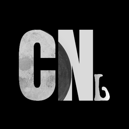
NoctuList
Guest list, door and bar app for live music venues
NoctuList is made for concert nights. The door staff check guests and volunteers in, the bar charges drinks to their credit, and the team manages lists, shifts and perks from the admin side. Every device shares the same data.
It runs on Android (tablets and phones), macOS, Windows and Linux. Download the latest release or read the source on GitHub.
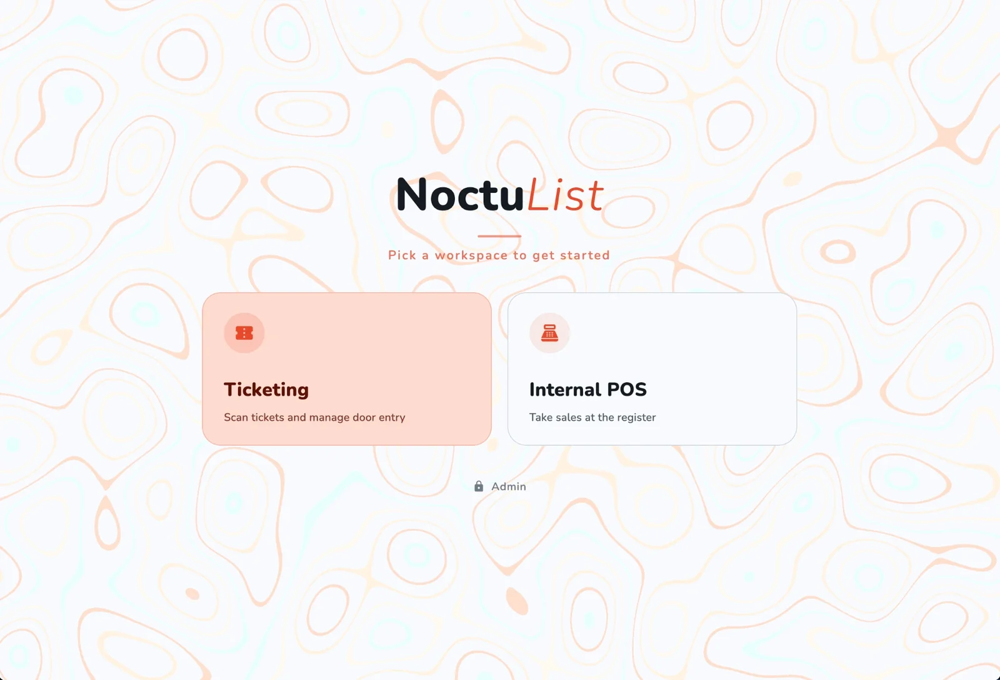
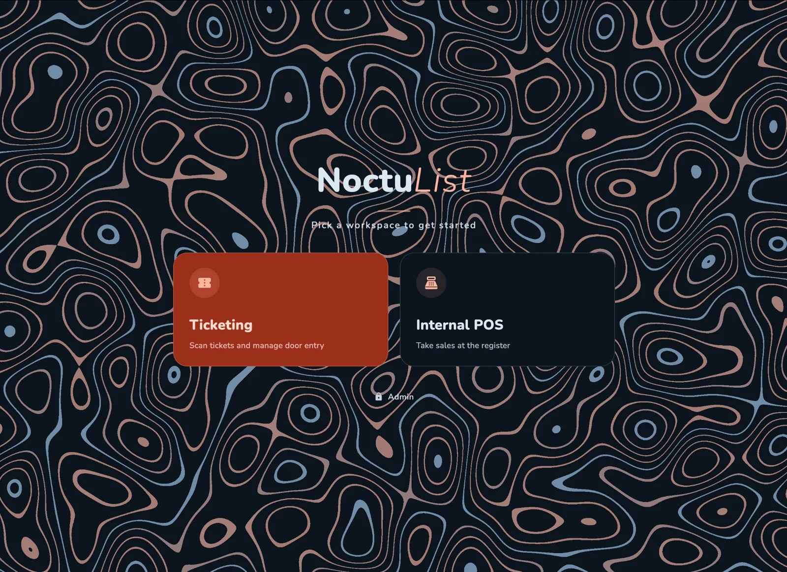
What it does
- Guest list. Permanent and one-night guests, invitations, notes, and which venue they're on the list for.
- Volunteers. Profiles, shifts and job history. Shifts can be imported from a Google Doc or Sheet.
- Perks. Volunteers earn ranks and benefits from the shifts they do.
- Door check-in. QR codes from the camera or a webcam, NFC cards (built-in or USB/Bluetooth readers), and a headcount per venue.
- Bar POS. Sales charged to a guest's or volunteer's credit, the rest in cash, with PDF reports per evening or date range.
- Emails. QR codes sent through Gmail, with optional Apple Wallet and Google Pay passes.
- Sync. Firebase (realtime) or a Google Sheet. Data is stored on the device first, so it keeps working without a connection.
Screenshots
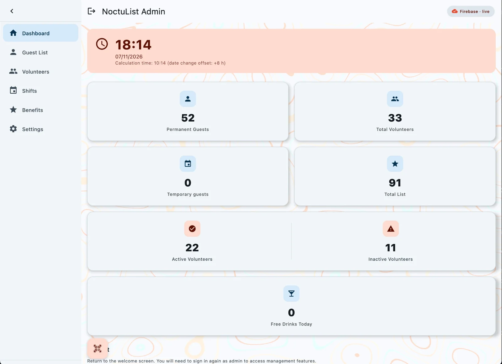
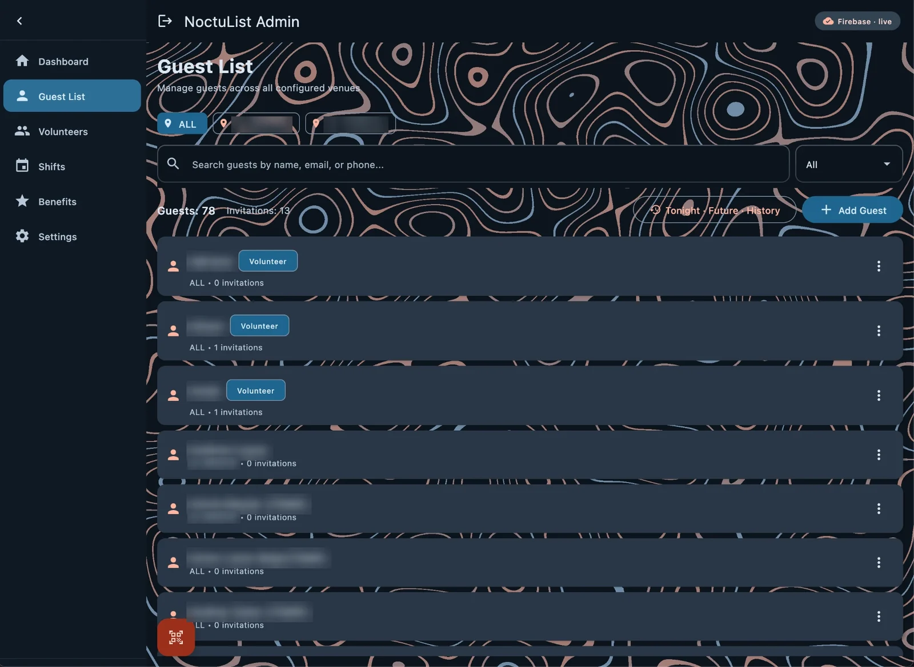
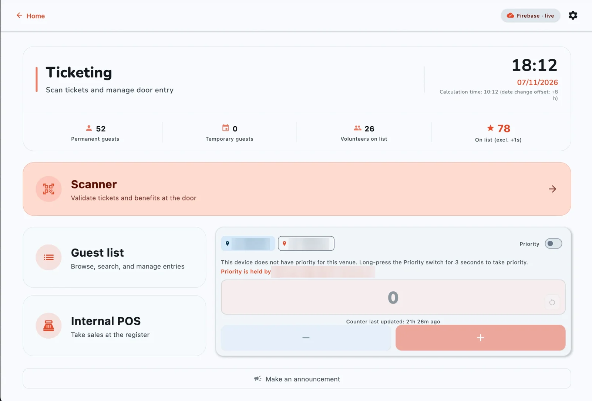
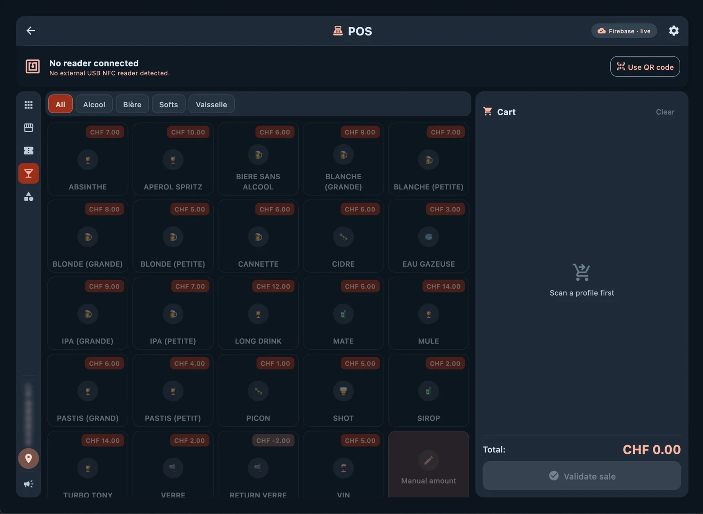
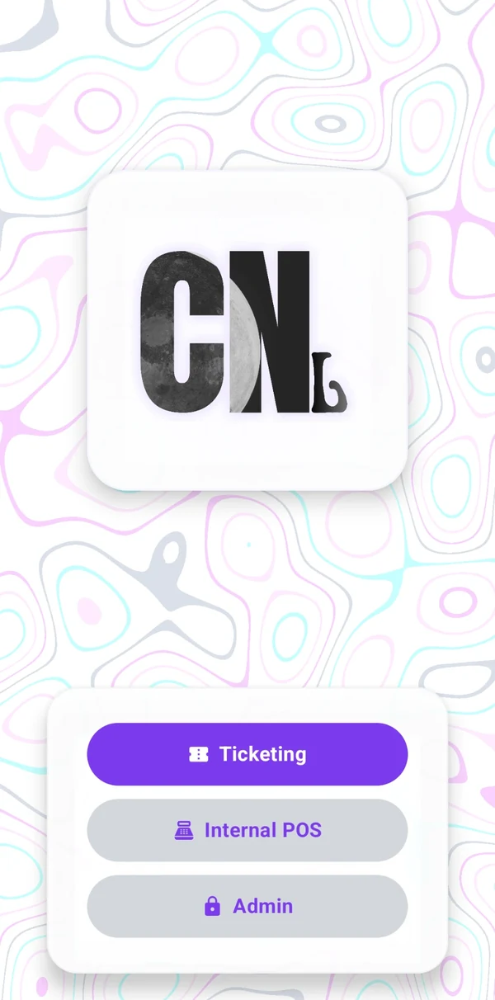
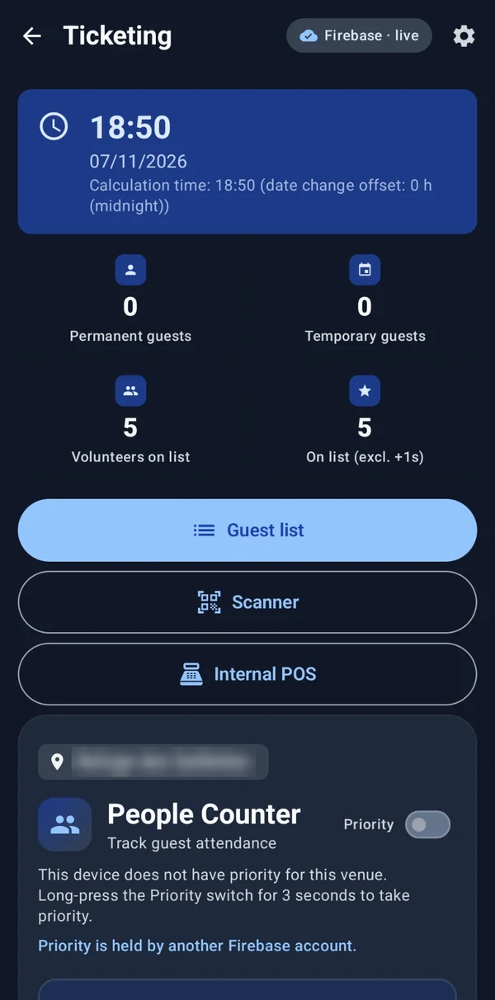
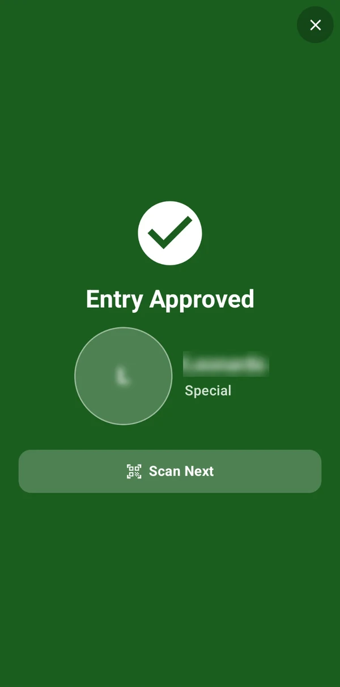
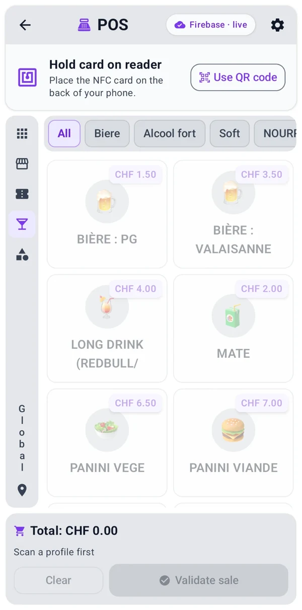
Download
Installers are attached to each GitHub release. The app tells you when a new version is out.
| Platform | File |
|---|---|
| Android | .apk |
| macOS (Apple silicon or Intel) | .dmg |
| Windows | .msi or .exe |
| Linux | .deb or .AppImage |
Setting up a new organisation: see the Firebase guide. The interface is in English, French, Spanish, Hindi, Latin and Chinese.